扉页
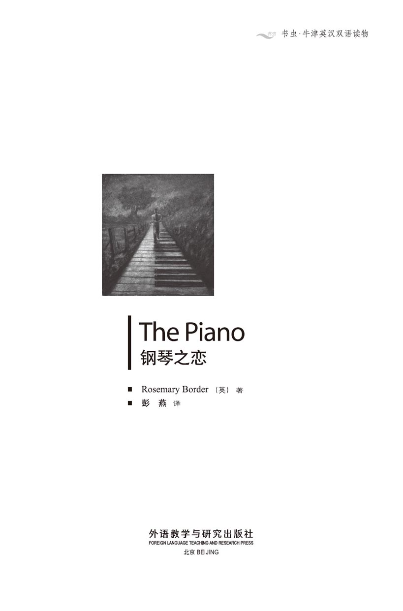
版权页
京权图字：01-2006-3298
Originally published by Oxford University Press, Great Clarendon Street, Oxford. © 2000
This edition is licensed for sale in the People's Republic of China only and not for export therefrom.
'Oxford' is a registered trademark of Oxford University Press.
只限中华人民共和国境内销售，不包括香港特别行政区、澳门特别行政区及台湾省。不得出口。
图书在版编目（CIP）数据
钢琴之恋 = The Piano／（英）博德（Border, R.）著；彭燕译．—北京：外语教学与研究出版社，2007.7（2014.11重印）
（书虫·牛津英汉双语读物）
ISBN 978-7-5600-6839-8
Ⅰ．钢… Ⅱ．①博…②彭… Ⅲ．①英语—汉语—对照读物②中篇小说—英国—现代 Ⅳ．H319.4:I
中国版本图书馆CIP数据核字（2007）第110797号
出版人： 蔡剑峰
责任编辑：易 璐
封面设计：孙莉明
出版发行：外语教学与研究出版社
社 址：北京市西三环北路19号（100089）
网 址：http://www.fltrp.com
版 次：2007年8月第1版
书 号：ISBN 978-7-5600-6839-8
* * *
凡侵权、盗版书籍线索，请联系我社法律事务部
举报电话：（010）88817519 电子邮箱：banquan@fltrp.com
法律顾问：立方律师事务所 刘旭东律师
中咨律师事务所 殷 斌律师
内容简介
内容简介
音乐是从哪儿来的？是可以学会的吗？还是说，它仅仅是被赐予的才能，没有人知道它来自哪里？
这个故事里的小男孩在学校成绩不好，无论是语文还是数学他都不擅长。他喜欢和其他孩子一起唱歌，但是唱得并不出色。他第一次找工作就碰了壁。他是个好孩子，但没有什么特殊的才能。
然而有一天，他发现了一架钢琴。他还发现自己会弹钢琴。所以，或许我们可以说，不是他发现了音乐，而是音乐找到了他。
THE PIANO
THE PIANO
Where does music come from? Is it something that you learn? Or is it simply given to you — and nobody knows where it comes from?
The young boy in this story is not good at school. He is not good at learning words or numbers. He likes to sing with the other boys and girls; but he is not good at singing. He does not get the first job that he tries to get. He is a nice boy, but he is not good at anything special.
And then he finds a piano. He also finds that he can play the piano. So, perhaps we can say that he does not find music, but that music finds him.
目录
1．In the Dressing-room
1
In the Dressing-room
SIR ANTHONY EVANS PLAYS LISZT. The words above the door of the theatre were a metre high. On the wall there was a big picture of Sir Anthony at the piano. Hundreds of people were waiting outside the ticket office. It was Sir Anthony's eightieth birthday concert and everybody wanted a ticket. I had a special ticket, because I was a newspaper reporter. I wanted to talk to the famous pianist before his concert. I showed my ticket to the doorman and went into the theatre. Then I walked upstairs to the dressing-rooms.
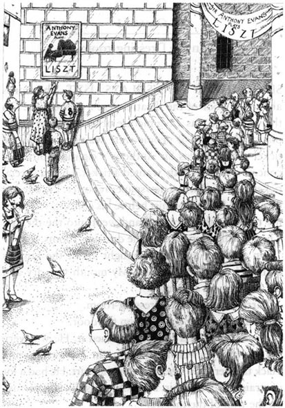
On my way upstairs I thought about the famous pianist. I was a little afraid. My mouth was dry and my hands were shaking.
I arrived outside the dressing-room.
There was a big gold star on the door.
I knocked, and a tall man opened it. He was very old, but his eyes were blue and bright. He was wearing black trousers and a beautiful white shirt. He had a lot of straight, silvery hair. He looked just like his picture on the wall of the theatre.
'My name's Sally Hill,' I began. 'I...'
The old man saw my notebook and smiled at me.
'Don't tell me. You're a reporter. Which newspaper do you work for?'
'The Sunday Times, sir.'
'A very good newspaper. Come in and sit down. Ask your questions. We were young once, weren't we, Linda? But of course that was a long time ago.'
He turned to a tall woman, who was standing in the corner. She smiled at me with friendly brown eyes. 'So this is Lady Evans,' I thought. 'What a nice face she has! She looks like a farmer's wife.'
I was not afraid any more. I sat down and opened my notebook.
'Tell me about yourself, please, Sir Anthony. Did you come from a musical family? Did you start to learn the piano when you were three, like Mozart?'
The famous pianist smiled. 'No, no, my dear. I am the first musician in my family. And I was fourteen years old before I touched a piano for the first time.' He saw the surprise on my face. 'We have a little time before my concert. I'll tell you my story. It's a strange story, but every word of it is true. You see, I left school when I was thirteen. Everybody called me Tony in those days. I worked on a farm...' It was an exciting story and he told it well. At first I tried to write everything down in my notebook. Then the pen fell from my hand and I just listened. I was lost in Sir Anthony's wonderful story. He told me about an old school behind a high wall in a dirty street. There was broken glass on top of the wall. The school yard was very small. As he spoke, pictures came into my mind. I saw a little boy called Tony Evans, playing football with an old tin...
pianist n. a person who plays the piano 钢琴家，钢琴演奏者
shake v. to move forcibly or quickly up and down or to and fro 发抖，颤抖
Lady n. used as the title of the wife of a knight 夫人，太太（用作对爵士妻子的尊称）
surprise n. the feeling you have when something unexpected or astonishing happens 惊奇，诧异
exciting adj. arousing great interest or enthusiasm 刺激的，令人兴奋的
yard n. a piece of enclosed ground esp. attached to a building or used for a particular purpose 天井，庭院
tin n. a metal container used for preserving food （存放食物的）金属盒
化妆间里
1．化妆间里
安东尼·埃文斯爵士演奏会。曲目：李斯特。横幅张挂在剧院门口，每个字都高达一米。墙上挂着一幅安东尼爵士弹奏钢琴的巨幅肖像画。售票处门外排着几百人的长队。这是安东尼爵士的八十寿辰音乐会，每个人都想要张票。由于我是报社记者，所以得到了一张记者专用票。我想在音乐会开始之前采访这位著名的钢琴家。我把票出示给看门人，然后走进了剧院，朝楼上的化妆间走去。
我一边上楼，一边想着这位著名的钢琴家。我有点害怕，我的嘴巴发干，手也在抖。
我来到化妆间门外。
门上有一颗很大的金色的星星。
我敲了敲门，一位高个子男士开了门。他的年纪很大了，可是眼睛湛蓝湛蓝的，眼神明亮。他穿着黑色的长裤和漂亮的白衬衫，满头笔直的银发。他看上去跟剧院墙上的那幅画里一模一样。
“我叫萨莉·希尔，”我开口道，“我……”
老人看见我的笔记本，对我露出了微笑。
“啊，不用说，你是记者。你是哪一家报社的？”
“《星期日时报》，先生。”
“那是家很好的报纸。进来，坐吧。有什么问题就问吧。我们也曾经年轻过，对不对，琳达？不过，那当然是很久很久以前的事情了。”
他转向角落里站着的一位高个子女士。她那双褐色的眼睛含着友好的笑意看着我。“那么，这一位一定是埃文斯夫人了，”我心想，“她的脸庞真慈祥！她看上去就像农夫的妻子。”
我不再感到害怕了。我坐下来，摊开笔记本。
“请告诉我一些关于您自己的事情，安东尼爵士。您出身于音乐世家吗？您是不是像莫扎特那样，三岁就开始学习弹钢琴了？”
这位著名的钢琴演奏家笑道：“不，亲爱的孩子，不是这样。我是我们家出的头一个音乐家。一直到14岁，我才第一次接触钢琴。”他看到我脸上讶异的神色，接着说：“音乐会开始之前，我们能有一小会儿时间，让我把我的故事讲给你听吧。这是一个不可思议的故事，但字字句句都是真的。是这样的，我13岁就离开了学校。那会儿他们都叫我托尼。我在一个农场里干活儿……”
他娓娓道出了一个令人激动的故事。起初，我试图把他说的每一句话都记在笔记本上。然而，听着听着，笔从我手中滑落，我只是投入地听他讲述。我沉浸在安东尼爵士那个奇妙的故事当中。他向我讲到一条肮脏的小巷里高墙内的一所旧学校，墙头插着碎玻璃，学校的院子很窄小。他讲着讲着，我脑海里渐渐浮现出这样一幅画面：一个名叫托尼·埃文斯的小男孩，把一个旧罐头盒当足球踢着……
2．A Poor Boy
2
A Poor Boy
The teacher's name was Mr Grey. He was grey, like his name: he was old and grey and tired. Everything about him was grey: grey suit, grey shirt, grey hair and a long, thin, grey face. When he smiled the children saw his long, grey teeth. But he did not often smile. Mr Grey did not enjoy his job. He did not like children.
'Why does he work here?' one of the children asked one day. 'He doesn't like us. '
'But he likes the long school holidays!' said Tony. The other children laughed. They thought that was a very clever answer.
But Tony was not a clever boy. He was big and slow and silent. He did not enjoy his lessons. Usually he just sat at his desk and waited quietly for four o'clock to come, when he could go home.
But Tuesday mornings were different, because Tuesday was music day. Every Tuesday morning an old lady called Mrs Lark came to the school. Mrs Lark played the piano and the children sang. She was not a very good pianist, but she liked children and she enjoyed her work. She knew a lot of songs too. Every Tuesday her fat little fingers flew like birds up and down the keys of the piano. The children sang like birds, too. Then twelve o'clock came. Mrs Lark said 'goodbye' and locked up the piano for another week.
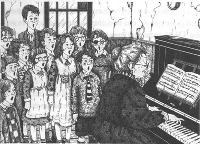
Tony did not often hear music. His family was poor, and poor people did not often hear music. There was no TV or radio in those days. There were concerts in the town, of course, but poor people did not go to concerts. Sometimes an Italian street musician came to town. He had a little piano on wheels, and a poor thin monkey which sat on top of it. The people came out of their houses to listen to his music. Then the monkey went round with a little tin cup. 'Give us a penny!' sang the musician. But when the monkey came back, the tin cup was always empty. The musician shook his head and pushed his little piano away.
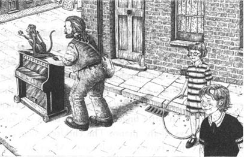
There were six children in the Evans family, and Tony was the oldest. They lived in a very small house at the end of a long, grey street. The toilet was outside, in the yard. There was no bathroom. Everybody washed in the kitchen. On Saturday evenings everybody in the family had a bath one after another in an old tin bath in front of the fire. It took all evening. Every Monday Mrs Evans washed all the family's clothes in the tin bath. But the Evans were clean and they had enough to eat. Tony did not feel poor, because all his friends were poor too.
In those days, poor children usually left school when they were thirteen. Most of Tony's friends found jobs in shops or factories in the town. Tony did not want to work in a shop or a factory. But he needed a job because his family needed the money.
A few days after his thirteenth birthday, Tony left school too. He began to look for a job. But he was unlucky. The factory did not want him. The shops did not want him. Then his mother thought, 'What about farming?'
One hot summer afternoon she decided to take her son to a farm outside the town.
'I worked on Mr Wood's farm when I was young,' she told Tony. 'Then I met your father and we moved to the town. But I enjoyed farm work, and I think you'll like it too... I wrote to Mr Wood last week and asked him to give you a job on the farm. That will be better than the factory.'
grey adj. between black and white in colour; gloomy; pale 灰色的；阴郁的；面色苍白的
tin n. a soft white metal 锡
because conj. for the reason that; since 因为
一个穷孩子
2．一个穷孩子
这里的老师是格雷先生。他的人和他的名字一样陈腐老套。他年岁大了，头发灰白，看上去疲惫不堪。他身上的每一样东西都是灰色的。他的外套是灰色的，衬衫是灰色的，头发是花白的，一张脸也瘦长而苍白。他咧嘴一笑，孩子们就能看到他那长长的、灰白的牙齿。但他不常笑。格雷先生对他的工作一点也不热心，他不喜欢孩子们。
“他干吗干这份工作？”一天，有个孩子问道，“他又不喜欢我们。”
“可他喜欢学校长长的假期！”托尼说。其他孩子纷纷笑了起来，觉得他的回答很聪明。
不过，托尼可不是个聪明的孩子。他个子高大，慢吞吞的，话也很少。他不喜欢听讲，平常他总是坐在自己的座位上静静地等着，等到4点钟，他就可以回家了。
但是，星期二的早晨却不一样，因为这一天是唱歌的日子。每个星期二早晨，一位被大家称作拉克夫人的老太太都会到学校来，她弹钢琴，孩子们唱歌。她的琴弹得不太好，可她喜欢孩子们，也喜欢这份工作。她会弹的曲子真不少。每个星期二，她胖胖的、短小的手指头都会像小鸟一样在琴键上灵活地上下跳跃，孩子们唱得也像小鸟一样动听。一转眼，12点就到了。拉克夫人说声“再见”，把钢琴锁上，再想唱歌就要等下个星期了。
托尼难得听到音乐。他家境贫寒，而穷苦人家总是没什么音乐可听的。那个时候既没有电视，也没有收音机，城里当然也举行音乐会，但穷人是去不起的。城里偶尔也会来一个意大利流浪琴师。他有架带轮子的小钢琴，琴上还坐着一只可怜的小瘦猴。人们纷纷走出门来听他演奏。接着，小猴就拿着一只小小的锡杯在人群里转一圈。“施舍点吧！”琴师喝道。可是小猴回来的时候，杯子总是空的。琴师只有摇摇头，推着小小的钢琴走了。
埃文斯家有六个孩子，托尼是老大。他们一家住在一条阴暗的长巷子尽头一幢很小很小的房子里。马桶在外面的院子里。家里没地方洗漱，全家人只得在厨房里将就。每到周六晚上，一家人就一个接一个在炉火前用一个旧的锡澡盆洗澡，要一整晚才能全部洗完。每个星期一，埃文斯太太都要把一家人的衣服泡在锡澡盆里洗干净。但是埃文斯一家衣着干净，也能吃得饱饭。托尼不觉得自己家穷，因为他的朋友们也都很穷。
那时候，穷人家的孩子往往到了13岁就辍学了。托尼的朋友们大多在城里的商店或是工厂里找了活儿干。而托尼既不愿意去商店，也不愿意进工厂。可他需要一份活计，因为家里需要这点钱。
13岁生日过完没几天，托尼也离开了学校，他开始找工作。可是他的运气不好。工厂不要他，商店也不要他。然后他的母亲想到：“种田怎么样？”
一个炎热的夏日午后，她决定把儿子带到郊外的一个农场去。
“年轻时，我曾在伍德先生的农场里干过活儿，”她对托尼说，“然后我遇见了你父亲，我们搬到了城里。可是我喜欢干农活，我觉着你也会喜欢的……我上个星期给伍德先生写了封信，让他给你在农场里找份活儿干，总比在工厂里强。”
3．A Farmer's Boy
3
A Farmer's Boy
Tony and his mother got on a bus in the middle of the town. At first they drove through streets of small, grey houses. Then the bus left the town and drove along a country road.
The bus stopped in every village. Tony saw green fields and small, quiet villages. Every house had a garden. The smell of the flowers came in through the open windows of the bus.
At last the bus stopped. Tony could see a river and an old bridge. A small road ran across the bridge, through the fields and over a hill. 'Come on, Tony,' said his mother. They got out of the bus and walked two kilometres in the hot sun. There were white and yellow flowers at the side of the road. Tony did not know their names. He wanted to know more about them. He wanted to know more about the trees too. There were no flowers or trees in his street.
He looked at the cows in the fields.
'I've never seen a real cow,' he said to himself. He watched them moving very slowly through the long, green grass. They looked big and quiet.
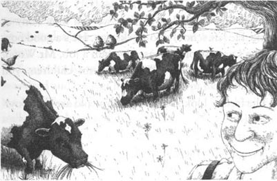
Tony and his mother arrived at the farmhouse and walked through the farmyard. Chickens were looking for food. A fat white cat sat on a wall and watched them with sleepy eyes.
Mr Wood came to the door and spoke to Tony's mother. 'Hullo, Betty. It's nice to see you again. Thank you for your letter. How are you?' They talked together like old friends.
Tony stood at the door. He felt lost and uncomfortable. But the farmer smiled at him.
'Is this your son, Betty?' he asked.
'Yes. This is Anthony — but we call him Tony at home. He left school two weeks ago. He's a good boy, and he's very strong. Please give him a job, Mr Wood. We need the money. We've got six children, you know.'
The farmer looked at Tony. 'How old are you, boy?' he asked.
'Thirteen, sir.'
'Do you like the country?'
'Yes, sir,' said Tony.
'Would you like to work for me, Tony?' asked Mr Wood. 'Would you like to be a farm boy?'
Tony thought about the factory and the shops. The shops were bad, but the factory was worse. When people came out of the factory in the evening their faces looked white and ill. 'Nothing can be worse than that,' he thought. He looked into the farmer's smiling red face. 'Yes, sir,' he said. 'Yes, please.'
His mother was right. Tony was a good, strong boy and he worked very hard for Mr Wood. The old farmer did not pay him much money. Tony ate his meals in the kitchen and he slept in a little room at the top of the farmhouse. But the farmer was kind to him and taught him a lot. Mr Wood had no sons. He had one daughter. Her name was Linda, and she was a year younger than Tony. Mr Wood loved Linda dearly, but he wanted a son very much. He was like a father to Tony.
Tony was happy. At the end of every day his back was tired and his legs hurt, but he slept like a baby. He ate Mrs Wood's good country food. He drank a lot of milk. Soon he needed new clothes. He sent his old clothes home for his brothers. He sent his family money, too.
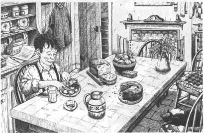
Sometimes Tony visited his family. He enjoyed those visits, but he was always happy to leave again. 'I'm a country boy now,' he thought.
In the school holidays Pip and his brother John came to the farm. Pip was seventeen and John was sixteen, but they were both still at school. Their father had a large shoe shop in the town. He wanted them to go to college and learn to be businessmen. But the boys spent all their holidays on Mr Wood's farm.
'I want to be a farmer,' said Pip.
'That's right,' said John. 'Farming is the best job in the world!'
'But you just come here in the summer!' said Tony. 'It isn't always summer, you know. The sun doesn't always shine. Farmers work hard in the winter too. It's a hard, dirty job.'
'But you like it!' said John, and he was right. Tony liked his job very much.
bridge n. a structure carrying a road, path, railway, etc., across a stream, road, railway, etc. 桥
uncomfortable adj. not comfortable; uneasy 不舒服的，不自在的
shine v. to emit or reflect light; glow 照耀，发光
乡下少年
3．乡下少年
托尼和母亲在镇中心上了一辆公共汽车。起初，他们穿过一排排矮小的灰色房子，然后，汽车开出城外，开上了一条乡间小路。
公共汽车每到一个村子都会停下来。托尼看到绿色的田野和僻静的小村落。每座房子都带有花园，花香从开着的车窗透了进来。
最后车停了下来。托尼看到一条小河和一座老旧的桥。一条小路越过小桥，穿过田野，延伸至一座小山丘的另一边。“来吧，托尼。”他的母亲说道。他们下了车，在热辣的阳光下走了两公里路。路边开着白色和黄色的花，托尼不知道它们的名字，他想更多地了解这些花，也想多了解了解那些树。在他住的那条街上，既没有花，也没有树。
他看着田野里的奶牛。
“我还从没见过真正的奶牛。”他自言自语道。他看着奶牛在高高的绿草中缓缓地穿行。它们看起来既高大又安静。
托尼和母亲来到农场里的房子那儿，穿过房子前的庭院。小鸡正在四处觅食。一只胖胖的白猫坐在墙上，睡眼蒙胧地看着他们。
伍德先生来到门口，对托尼的母亲说道：“你好啊，贝蒂，真高兴又见到你了。谢谢你的来信。你还好吗？”他们像老朋友一样交谈起来。
托尼站在门口，他有点不知所措，觉得不大自在。可农场主对他笑了。
“这就是你的儿子吧，贝蒂？”他问道。
“是的。这就是安东尼——可是我们在家里都叫他托尼。他是在两个星期前离开学校的。他是个好孩子，身体也很壮实。请您给他找点活干吧，伍德先生。我们需要钱，要知道，我们家里有六个孩子呢。”
农场主看着托尼。“你多大了，孩子？”他问道。
“13岁，先生。”
“你喜欢乡下吗？”
“喜欢，先生。”托尼答道。
“你愿意替我干活吗，托尼？”伍德先生问道，“愿意做个在农场干活的乡下孩子吗？”
托尼想了想工厂，又想了想商店。商店的情况不怎么样，可是工厂就更糟。人们晚上走出厂门的时候，一个个面色苍白，一脸病容。“没什么会比那更糟了。”他想道。他注视着农场主那张红红的笑脸，说：“是的，我愿意，先生，我愿意替您干活。”
他母亲说得没错。托尼是个壮实的好孩子，他替伍德先生干活很卖力。老农场主给他的报酬不多。托尼在厨房里吃饭，睡在农场楼房顶层的小阁楼里。但是农场主待他很好，而且还教给他很多东西。伍德先生没有儿子，只有一个女儿，名叫琳达，比托尼小一岁。伍德先生非常宠爱琳达，但他很想要个儿子。他待托尼如同自己的亲生孩子。
托尼很开心。每天干完活他都会觉得背酸腿痛，但是他晚上睡得很好。他吃的是伍德太太做的可口的农家饭菜，还喝很多牛奶。旧衣服很快就穿不下了，他把旧衣服寄回家给弟弟们穿，还给家里寄钱。
托尼有时候也回家看看。他喜欢回家逗留一阵子，但离开的时候也总是很高兴。“现在我是个乡下孩子了。”他这样想道。
学校放假的时候，皮普和他的弟弟约翰会到农场来。皮普17岁，约翰16岁，但兄弟俩仍旧在上学。他们的父亲在城里开了一家很大的鞋店，希望这兄弟俩能上大学，学习如何经商。但是两个男孩一到假期就来伍德先生的农场。
“我想做个农场主。”皮普说道。
“对呀，”约翰答道，“农活儿是天底下最棒的活计！”
“可是你们只有夏天才来！”托尼说道，“要知道，这里不会永远是夏天，也不会永远阳光灿烂。农夫们冬天也得辛苦劳作。这是份又累又脏的活计。”
“但是你喜欢干农活儿啊！”约翰说道。他说得对极了，托尼的确非常喜欢自己的工作。
4．An Old Piano
4
An Old Piano
One hot summer afternoon Tony, John and Pip were cutting the long grass. The sun was hot and they were tired. Mr Wood came into the field.
'Now, boys,' he said, 'I have a job for you.'
'He always has a job for us!' said Pip very quietly. The other boys smiled. The farmer liked to keep them busy. They walked with him to an old wooden building near the farmhouse.
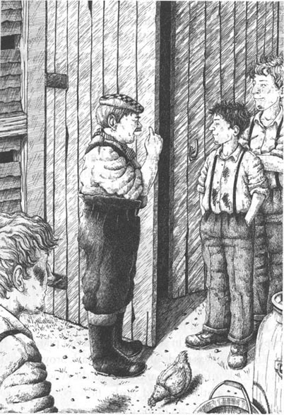
'Now,' said Mr Wood. 'My new car will arrive here next week. I want this building for a garage. Get the rubbish out of the building. Then clean it really well. I want to keep the car in it.'
'What shall we do with the rubbish, Mr Wood?' asked Pip.
'Get rid of it, of course!' answered the farmer. 'Now stop asking questions, young Pip. I'm a busy man.' He walked away.
The three boys opened the doors of the building. They looked at the rubbish, then they looked at each other.
'This is going to take a long time,' said Tony.
He went to the back of the building. He saw something behind a lot of old boxes. It was very big.
'What's this?' asked Tony.
'Is it a cupboard?' asked Pip.
John came and moved some of the boxes. 'It isn't a cupboard,' he said in surprise. 'It's an old piano.'
The piano was made of beautiful, dark brown wood. Tony took off his shirt and cleaned the wood with it. He saw brightly-coloured birds, flowers and leaves. They shone like stars in the dark, dirty building. Tony opened the piano. He looked at the keys.
'We can't get rid of this,' he said. 'We really can't.' He found an old, broken chair and sat down at the piano. His fingers touched the keys. He closed his eyes. Half-forgotten music danced through his mind. His fingers began to move. They moved up and down the keys. He began to play an old song. He was suddenly very happy.
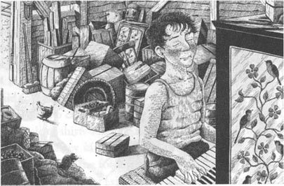
'I can play the piano,' he thought. 'Nobody taught me, but my mind tells my fingers what to do, and I can make music. '
His friends listened.
'That's beautiful,' said John. 'What is it?'
'I don't know,' said Tony.
They heard a noise behind them. Linda Wood was standing at the door. She was a tall, thin girl with long, soft brown hair. She was not beautiful, but she had big, kind brown eyes and a sweet smile. She was smiling now, and she was singing very quietly.
Tony heard her and stopped playing. He stood up. His face was red and he felt hot and uncomfortable.
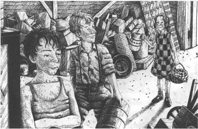
'Don't stop, Tony,' said Linda.
'I've finished,' said Tony shortly. He closed the piano.
Linda came into the building. 'Look,' she said, 'Mother has sent you some cakes and milk. She asked me to bring them.'
Mrs Wood was a very good cook. The cakes were still warm... They all ate and drank.
Linda looked at the piano. 'Who taught you to play the piano, Tony?' she asked.
Tony looked down at his dirty old shoes. 'I can't play the piano,' he said.
'Yes, you can!' said Linda. 'I heard you. I have piano lessons at school, but I can't play like you. I like that song. It's called Green Fields. I've got the music at school, but I can't play it. It's too difficult for me. Do you want to borrow it?'
'I can't read music,' said Tony. 'We didn't have music lessons at my school.' He looked unhappy and thoughtful. 'Music!' thought Tony. He remembered the street musician with his little monkey. Then he thought about Mrs Lark. He remembered those wonderful Tuesday mornings, and he smiled. 'We sang a little on Tuesday mornings, that's all,' he said.
He stood and looked at the piano. 'I must have it,' he said to himself. 'I'll ask Mr Wood.'
At seven o'clock Tony washed in cold water and put on his clean shirt. Then he went to the kitchen with Pip and John. They sat down at the big kitchen table and Mrs Wood put the food on three hot plates. Then she went to have supper with Mr Wood and Linda.
Tony ate his meat and potatoes and drank two cups of strong, sweet tea. Then he had three small cakes and an apple. He was always hungry. He washed his plate and his cup and put them away.
'Now!' he thought. He got up and went to the door.
'Where are you going?' asked John.
'I want to ask Mr Wood about that piano,' said Tony. 'Pianos cost a lot of money. We must tell him about this one. Then he can decide what to do with it.'
He knocked at the door of the sitting-room.
'Come in!' said the farmer. He was reading his Farmer's Weekly. Mrs Wood was mending a hole in Linda's school dress. Linda herself was doing her homework at the table in the corner.
'Please, Mr Wood,' began Tony, 'there's an old piano in that building...'
'I don't want to know, boy!' said Mr Wood.
'You don't want to know?' said Tony. 'But a piano isn't rubbish, sir...'
'It is rubbish, boy. Take it away. Get rid of it. I want that building for my new car. Now go away. I'm tired. I've had a busy day and I want to read my newspaper.'
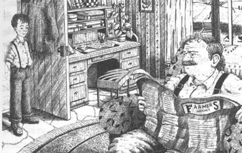
'But...' began Tony again.
'I don't want to know!' said Mr Wood. 'Go away!' He shook his newspaper angrily.
'Yes, Mr Wood,' said Tony. He went out and closed the door behind him. He came back into the kitchen.
'Listen — can you help me?' he said to Pip and John. 'Mr Wood doesn't want that old piano. He says I can have it. He wants the building for his new car. I can have the piano if I want it. And oh, yes — I want it very much. But where can I put it?'
'That's easy,' said Pip. 'We can put it on Mr Wood's lorry. We can take the piano to your house. Your family will love it!'
'You've never seen our house,' said Tony. 'It's very small, and there are seven people living in it. We can't take the piano there.'
'Sell it, then,' said John. 'Buy something nice with the money.'
'I don't want money,' said Tony. 'I want the piano.'
'How can I tell them?' he thought. 'How can I tell them how I feel about it?' He looked at his hands. He wanted to feel the black and white keys under his fingers again. He wanted to hear the music in his mind... 'What's happening to me?' he thought.
Pip looked at the clock. 'It's late,' he said. 'And I'm tired. I'm going to go to bed. We can think about your piano tomorrow.'
garage n. a building or indoor space in which to park or keep a motor vehicle 车库
rubbish n. something that is useless or of no value 垃圾，废物
cupboard n. a piece of furniture with a door and (usu.) shelves, in which things are stored 食橱，橱柜
nobody pron. no person 没有人，无人
noise n. a sound, esp. a loud or unpleasant one 声音，噪声
shortly adv. in a short time; soon 立刻，马上
music n. a set of written marks representing music 乐谱，曲谱
thoughtful adj. engaged in or given to meditation 沉思的，思考的
remember v. to keep in the memory; not forget 记得
lorry n. a large heavy motor vehicle for transporting goods, etc. 货车，卡车
一架旧钢琴
4．一架旧钢琴
一个炎热的夏日午后，托尼、约翰和皮普在割着那些高高的草。太阳很毒，他们都累坏了。伍德先生突然来到田里。
“喂，孩子们，”他说，“我给你们找了点活儿干。”
“他总是有活儿给我们干！”皮普小声说，另外两个孩子都笑了。农场主喜欢让他们忙个不停。他们随他一起走到农场不远处的一幢破旧的木屋那儿。
“是这样的，”伍德先生说道，“我的新车下个星期就要到了，我想把这幢房子变成车库。你们把屋里的垃圾都弄出去，然后把屋子彻底收拾干净。我想把汽车放在这里面。”
“那么垃圾怎么处理呢，伍德先生？”皮普问道。
“当然是把它们都扔掉！”农场主答道，“别问那么多了，小皮普，我忙着呢。”他说完便走了。
三个孩子打开屋门，他们看看那些没用的东西，又互相瞧瞧。
“这得花上好一会儿呢。”托尼说。
他走到屋子后面，瞧见在一大堆旧盒子后头有样东西。是个大家伙。
“这是什么？”托尼问道。
“是不是个橱柜？”皮普问道。
约翰走过来，把一些盒子挪开。“这哪儿是什么橱柜，”他吃了一惊，“这是一架旧钢琴。”
钢琴是用美丽的黑褐色木头做成的。托尼脱掉衬衫，用它擦了擦木头。他看到上面印有色彩鲜亮的飞鸟、繁花和树叶，在这座又暗又脏的房子里，它们像星星一样闪闪发亮。托尼打开钢琴，看了看琴键。
“我们不能把它扔掉，”他说，“绝对不行。”他找来一把破旧的椅子，坐在钢琴前，手指抚过琴键。他闭上眼睛，忘得差不多的音乐在脑海中跳跃。他开始移动手指，在琴键上流畅地敲击。他开始弹奏一首古老的曲子，忽然之间感到非常幸福。
“我能弹钢琴，”他心想，“从来没人教过我，可是我的大脑自动指挥手指怎么弹，而且我还能弹奏出曲子。”
他的伙伴们侧耳倾听。
“真美，”约翰说道，“这是哪一首曲子？”
“我也不知道。”托尼回答。
他们听到身后有声响。琳达·伍德正站在门口。她是位个子高高的苗条姑娘，有一头柔软的褐色长发。她长得并不好看，可是褐色的眼睛又大又温柔，笑起来甜甜的。她这会儿就在微笑着，还轻轻地哼唱着曲子。
托尼听到她的声音，止住了琴声。他红着脸站起身来，感到自己浑身发热，很不自在。
“接着弹呀，托尼。”琳达鼓励道。
“我弹完了。”托尼迅速答道。他合上了琴盖。
琳达走进屋来。“瞧，”她说道，“妈妈给你们准备了些蛋糕和牛奶。她让我带过来的。”
伍德太太的手艺很棒。蛋糕还是热乎乎的……他们都开始又吃又喝起来。
琳达瞅着钢琴。“是谁教你弹钢琴的，托尼？”她问道。
托尼低下脑袋，盯着自己又脏又旧的鞋子。“我不会弹琴。”他答道。
“不，你会弹！”琳达说，“我听见你弹来着。我在学校里学弹钢琴，可我弹得没你好。我喜欢那首曲子，那是《绿色的田野》。我在学校里看过谱子，可我弹不了，它对我来说太难了。你想不想借我的谱子看看？”
“我不识乐谱，”托尼答道，“我们学校里不开音乐课。”他变得忧郁起来，一副若有所思的样子。“音乐！”托尼在心里念着。他想起了那个带着小猴子的流浪琴师，然后他又想到了拉克夫人。他回忆起那些美妙的星期二的早晨，微微笑了起来。“我们只在每个星期二的早晨唱一会儿歌，仅此而已。”他说。
他站起身看着那架旧钢琴。“我一定要拥有它，”他对自己说道，“我要去问问伍德先生可不可以。”
晚上7点，托尼用冷水冲了澡，换上一件干净的衬衫，然后就跟皮普和约翰一起进了厨房。他们围着厨房宽大的桌子坐下，伍德太太将饭菜盛在三个热腾腾的盘子里端了上来，然后她便去跟伍德先生和琳达一起用晚餐了。
托尼吃完了他的那份肉和土豆，喝了两杯又浓又香的茶，接着他又吃了三块小蛋糕和一个苹果。他的胃口总是那么好。他洗了自己的盘子和杯子，把它们放好。
“我这就去！”他心里想着，并站起身来，走到门口。
“你要上哪儿去？”约翰问道。
“我想问问伍德先生那台钢琴的事，”托尼答道，“钢琴是贵重的东西。我们必须告诉他，然后由他来决定怎么办。”
他敲了敲起居室的门。
“进来！”农场主说。他正在看《农人周报》，伍德太太在给琳达补校服上的破洞，琳达自己则坐在角落里的桌旁写作业。
“伍德先生，请听我说，”托尼开口说，“那幢房子里有一架旧钢琴……”
“孩子，我不想知道这些事！”伍德先生说道。
“您不想知道吗？”托尼诧异道，“可是，先生，钢琴不是垃圾……”
“孩子，它就是垃圾，把它搬走，扔了它。我需要那间屋子来存放我的新车。现在出去吧。我累坏了。我这一天忙得不可开交，现在只想看看报纸。”
“可是……”托尼再一次开口道。
“我不想听！”伍德先生嚷道，“走吧！”他生气地挥着手里的报纸。
“好的，伍德先生。”托尼说。他退出房间，随手关上了门，回到厨房里。
“听我说——你们俩能帮帮我吗？”他对皮普和约翰说，“伍德先生不想要那架旧钢琴了，他说可以给我。他只想腾出那间房子放他的新车。如果我想要，那架钢琴就是我的了。嗯，是的——我确实很想拥有它。可是，我能把钢琴放在哪儿呢？”
“这很简单，”皮普说道，“我们可以把它载上伍德先生的卡车，运到你家去。你家里人一定会很喜欢的！”
“你们从来没见过我们家的房子，”托尼说道，“我家的房子很小，住了七个人。我们不能把钢琴放到那儿去。”
“那就把钢琴卖了吧，”约翰提议。“用换来的钱买些好东西。”
“可我不想要钱，”托尼说道，“我要的是那台钢琴。”
“怎么跟他们说呢？”托尼心想，“怎么才能向他们表达清楚我的感受呢？”他看着自己的双手。他想要再一次用手指触摸那些黑白相间的琴键，他渴望再一次听到音乐在心头涌动……“我这是怎么了？”他不明所以。
皮普看了看钟。“时候不早了，”他说道，“我也累了，我要睡了。明天再考虑你的钢琴问题吧。”
5．The Village School
5
The Village School
The next morning the boys got up at six o'clock. They took some sandwiches and a bottle of cold tea, and they began to cut the long grass in Mr Wood's biggest field.
The field was near a quiet road. At the side of the road was a small school. It stood in a garden. There were flowers and vegetables and a few fruit trees. But no children were there. The school was empty. It was summer and the children were on holiday.
The sun shone down angrily. The boys were hot and thirsty. At eleven o'clock Tony went for a drink, but the bottle was empty.
'I want a drink of water,' he said to Pip and John. He took the empty bottle and went into the school garden. There was a tap there and he turned it. No water came out. He went to the door of the school. He pushed — and it opened.
There was a little kitchen. Tony turned on the tap. He took a long drink and filled his bottle. Then he decided to look around the little school. It did not take him long. There was one classroom. The desks and chairs were very small, because it was a school for young children. Tony went back into the kitchen. 'It's July,' he thought. 'Everyone is on holiday. School doesn't start again until September. I can put the piano here. No one will come here. I've got six weeks. And in six weeks perhaps I can find a home for my piano.'
He went back to the field.
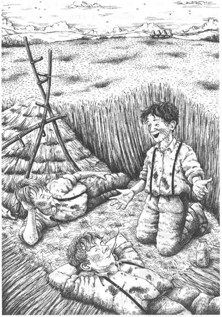
'You were away a long time,' said Pip. 'Did you have a drink, or a holiday?' They all laughed. 'Listen,' said Tony. 'The school door is open. The school's empty. I'm going to put my piano in the classroom.'
'Don't be stupid!' said John. 'What will the teacher say?'
'He won't say anything! He's on holiday,' said Tony. 'You're on holiday too, aren't you? When do you go back to school?'
'September the ninth,' said John.
'That's right!' said Tony. 'Listen - the door's open. The key's in the door. I'm not going to steal anything. I'm just going to keep the piano in the classroom for a week or two... Can you help me? We'll put the piano on the lorry, and we'll take it to the school.'
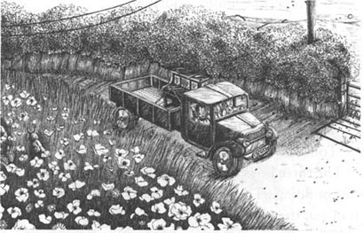
'When?' asked Pip.
'Tonight,' said Tony.
The three boys worked very hard. They cleaned out the building. They cleaned the windows too. Then they put the piano on Mr Wood's lorry.
'What time are we going?' asked Pip.
'Eight o'clock,' answered Tony.
Linda gave the boys their supper that night. Mrs Wood was at a meeting in the village.
'Boys,' said Linda, 'Father says you are borrowing the lorry tonight.'
'Yes, that's right,' said Pip. 'I'm driving.'
'Please, can you take me to the village? Catherine is ill.' Catherine was Linda's best friend. 'I want to visit her.'
'But...' began Tony. He looked into her kind brown eyes and he told her his story. He told her about his old school. He told her about Mrs Lark. He talked about the village school, and the open door, and the quiet, empty classroom. Linda listened. John and Pip listened too. Then Linda smiled.
'Thank you, Tony. Now I understand. And I want to help you.'
The boys drove Linda to Catherine's house.
'Please come back at half past nine,' she said to Pip. She spoke loudly because Catherine's mother was listening. Then she said, very quietly, 'Good luck, Tony — and be careful!'
The boys drove the lorry to the little school. Then they moved the piano. It was very heavy, but they were young and strong. They pushed it into the classroom and stood it against a wall.
'It looks beautiful here,' said Pip. He touched the keys. They made a loud, unmusical noise.
'Listen to that!' said his brother. 'You had piano lessons for three years, but you didn't learn anything. Play something for us, Tony.'
Tony sat down and began to play one of Mrs Lark's songs. The music sang in his mind. It travelled along his arms. His fingers danced over the keys. He did not look at his hands. He did not look at the keys. His eyes were closed. He was in another world.
His friends listened. Tony was not clever. He was big and quiet and slow. But there was music in his big, strong hands.
That summer was a happy time for Tony. Every evening after supper he borrowed Linda's bicycle. He cycled to the school, and he played the piano. When it was dark he cycled back to the farm again. He was afraid to turn on a light in the school. He did not want anybody to see him.
'I think Tony has a girlfriend,' said Mrs Wood to Linda. Linda just smiled.
Tony learned to read music. Linda brought him a book of easy songs. She showed him the music. He looked at the little black notes and the five thin black lines on the pages of the book.
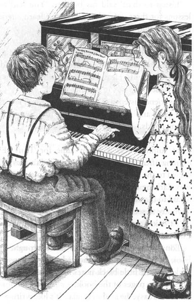
'This is easy,' he said to Linda. 'It's like writing. The notes tell your fingers what to do.'
'That's right,' said Linda. She showed him the long notes and the short notes. She taught him to read the words at the top of the page.
'Look!' she said. 'That's Italian. Lento — slow.'
But Tony was not slow. He learned very fast. Linda was a good teacher. Both of them enjoyed her lessons.
thirsty adj. feeling thirst 渴的，口干的
tap n. a device by which a flow of liquid or gas from a pipe can be controlled 龙头，阀门
steal v. to take (property etc.) without right or permission, esp. in secret with the intention of not returning it 偷盗，窃取
careful adj. cautious 小心的，谨慎的
note n. a written sign representing the pitch and duration of a musical sound 音符
Italian n. the language used in Italy and parts of Switzerland 意大利语
lento adv. slow [音]缓慢地
乡村学校
5．乡村学校
第二天一早，小伙子们6点钟就起床了。他们带了一些三明治和一瓶凉茶，然后就开始割草。在伍德先生那片最宽阔的田地里，草已经长得很高了。
这片田地旁边有一条僻静的大路，路边有一所很小的学校，周围有一片花圃。花圃里种了花草、蔬菜和几棵果树。但学校里空荡荡的，一个孩子也没有。时值夏日，孩子们都放假了。
阳光毒辣辣地照射下来，男孩子们晒得又热又渴。到11点钟的时候，托尼去喝茶，但是瓶子已经空了。
“我想要喝水。”他对皮普和约翰说。他拿上空瓶子，来到学校的花圃，那儿有个水龙头。他拧开水龙头，但没有水。他走到学校门口，推了推门，门开了。
学校里有一间狭小的厨房。托尼打开水龙头，可劲儿灌了一气，又把瓶子装满。然后他决定在这所小学校里转转。没一会儿他就转完了一圈。这里只有一间教室，而且因为这是所小孩子的学校，所以桌子和椅子都很矮小。托尼回到厨房，“这会儿是7月份，”他琢磨着，“所有人都放假了，学校要到9月份才会开学。我可以把钢琴放在这儿，没有人会来。我有六个星期的时间，在这段时间里，我或许可以给我的钢琴找好地方。”
他回到田地里。
“你去了好一会儿啊，”皮普说道，“你是去喝水了，还是放假玩儿去了？”他们都笑了起来。
“听我说，”托尼说道，“学校的门开着，里面一个人也没有。我决定把我的钢琴放在教室里。”
“别傻了！”约翰说道，“老师会说什么呀？”
“他什么也不会说的！他放假回家了。”托尼回答道，“你也放假了，对不对？你什么时候回学校上课？”
“9月9号。”约翰答道。
“这就对了！”托尼说道，“听我说——门是开的，钥匙就插在门上。我不会偷任何东西，我只是想把我的钢琴放在那儿，只不过一两周的时间……你们能帮我吗？我们可以把钢琴放在卡车上，然后开车把它运到学校来。”
“什么时候呢？”皮普问道。
“今天晚上。”托尼答道。
三个男孩干得很起劲。他们把房子清理干净，把窗户也擦了。然后，他们将钢琴搬到伍德先生的卡车上。
“我们几点出发？”皮普问道。
“8点。”托尼答道。
那天晚上是琳达给他们盛的晚餐。伍德太太去村子里参加集会了。
“嗨，”琳达说，“爸爸说你们借了卡车，今晚要用。”
“对，是这样，”皮普答道，“由我开车。”
“哦，你们能把我捎到村里去吗？凯瑟琳生病了。”凯瑟琳是琳达最好的朋友。“我想去看看她。”
“可是……”托尼开口说道。他注视着她那双温柔的褐色的眼睛，把事情的始末告诉了她。他跟她说了自己原来的学校，说到拉克夫人，还讲了村子里的学校、那扇敞开的校门和那间安安静静、空荡荡的教室。琳达听着，约翰和皮普也听着。然后，琳达笑了。
“谢谢你告诉我，托尼，这下子我明白了。我也想帮助你。”
小伙子们开着车，把琳达送到凯瑟琳家。
“请你们9点半过来！”她对皮普嚷道。她有意提高嗓门，因为凯瑟琳的母亲就在一旁听着。然后，她又轻轻地说：“祝你好运！托尼——小心点！”
孩子们开着卡车来到那间小学校，然后把钢琴搬下车。钢琴很重，但他们既年轻又有力气。他们把钢琴推到教室里，靠着墙放好。
“它放在这儿真漂亮。”皮普评论道。他按了几下琴键，钢琴发出不成旋律的嘈杂响声。
“听听！”他的弟弟说道，“你上了三年钢琴课，可是什么也没有学会。给我们弹点儿什么吧，托尼。”
托尼坐下来，开始弹奏拉克夫人教他们的一首曲子。乐曲回旋在他的脑海里，通过双臂传递到他的手上。他的手指在琴键上跳跃着。他既没有看自己的双手，也没有看琴键。他闭着眼睛，进入了另外一个世界。
他的朋友们静静地听着。托尼并不聪明，他个子大，话也不多，行动起来慢吞吞的。可是，他那双粗壮的大手却奏出了优美的乐曲。
那个夏天，托尼过得很开心。每天晚上吃过晚餐，他都借琳达的自行车一直骑到学校，然后就开始弹琴。他会一直弹到天黑，然后再骑车回到农场。他不敢在学校里开灯，因为他不想被别人看到。
“我想托尼是交女朋友了。”伍德太太对琳达说道。琳达只是微笑。
托尼开始学着识谱。琳达给他带来一本简单的乐谱，教他看谱子。他注视着书页上小小的黑色音符和那五条细细的黑线。
“这挺简单的，”他对琳达说道，“就像文字一样，音符告诉你手指该怎么动。”
“说对了。”琳达说道。她教他辨别长短音符，也教他如何阅读乐谱上方的注释。
“瞧！”她说道，“这是意大利文，lento的意思是‘缓慢地’。”
但托尼可不是个反应迟缓的学生，他学得很快。琳达是个好老师。他们俩一个教，一个学，都很开心。
6．Mr Gordon Finds a Musician
6
Mr Gordon Finds a Musician
Mr Gordon was the teacher at the little village school. He was a kind old man and the children liked him. They enjoyed his lessons and he enjoyed teaching them. There was no piano at the school. This sometimes made him a little unhappy, because he loved music very much. But he sang with the children. He filled their young minds with songs and stories. It was a happy school.
One night during the summer holidays Mr Gordon wanted a book. He looked everywhere.
'I know!' he said suddenly. 'I left it at school. I'll go there at once. It isn't far away.'
He walked through the school garden. The door of the school was open! He felt in his pocket for the key — it was not there!
'Oh dear!' thought Mr Gordon. 'I forgot to lock the door. Now somebody is in the school. Perhaps it's a thief! What can I do?' Then he heard the music...
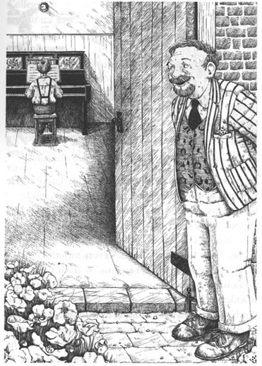
Tony played the same line of music again and again. It was not easy.
'Prestissimo,' said the words at the top of the page. 'Very fast.' His fingers flew over the keys.
Mr Gordon stood and listened. There was a happy smile on his face. Then Tony stopped playing.
'That wasn't right,' he said to himself. He looked carefully at the little black notes on their thin black lines. 'The left hand goes like this.'
Mr Gordon spoke. 'And the right hand goes like this...'
Tony turned round. His face was white. 'Don't tell the police,' he said. 'Please. I haven't stolen anything. I haven't done anything wrong.'
'No, no, of course not,' said the teacher. 'But who are you? What are you doing in my classroom? And how did this piano get here?'
Mr Gordon visited the farm and talked to Mr and Mrs Wood.
'Tony is very special,' said Mr Gordon. 'I have been a teacher for forty years, but I have never met a boy like Tony. He must have music lessons at once. Then he must go to the College of Music in London. He needs to work with other musical boys and girls.'
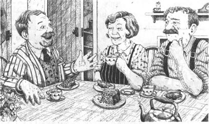
'But his mother and father are poor,' said Mrs Wood. 'They can't pay for music lessons. They can't send him to college. They have five small children at home. Tony sends them money every month.'
'I can give Tony his first lessons,' said Mr Gordon. 'I don't want any money — I'll be very happy to teach this wonderful boy. I feel — oh, how can I explain to you? ... This is a very exciting time for me. Last night I came to school to look for a book, and I found a musician! ... But Tony learns very quickly. Soon he will need a really good teacher. Then we'll have to think about money. Perhaps Tony can go to the College of Music in the daytime and work in a restaurant in the evenings. ...'
'No, he can't!' said Mr Wood. Suddenly his face was red and angry. 'Tony is a good boy. He's like a son to us. His father is poor, but we are not.'
'That's right!' said his wife. She was usually a quiet woman, but her eyes were bright and excited. 'We will send Tony to the College of Music,' she said.
Tony knew nothing about their conversation. He was cleaning Mr Wood's new car when Mr Gordon visited the farm. But that visit changed his life. Mr Wood had a quiet talk with him later.
'Mr Gordon wants to give you piano lessons,' he told Tony.
Tony's eyes shone like stars. Then he shook his head. 'I haven't any money, sir,' he said.
'Mr Gordon doesn't want any money. I've had a talk with him. You are going to go to the school at four o'clock every afternoon. You will have your lesson, and you will practise on the piano for two hours. Then you'll come back to the farm and have your supper.'
'But my work...' began Tony.
'I can find another farm boy,' said Mr Wood, 'but good musicians are special people. Give me three tickets for your first concert, and I'll be happy.'
suddenly adv. occurring or done unexpectedly or without warning 突然地，意外地
prestissimo adv. in a very quick tempo [音]最急板地
wonderful adj. remarkable or admirable 令人惊叹的
restaurant n. a place where meals are served to the public 餐馆
conversation n. the informal exchange of ideas, information, etc. by spoken words 交谈，谈话
practise v. to do repeatedly as an exercise to improve a skill 练习
戈登先生发现了音乐家
6．戈登先生发现了音乐家
戈登先生是那所乡间小学校的老师。他是一位和蔼的老人，孩子们都喜欢他。他们喜欢听他的课，而他也喜欢教他们。可是学校里没有钢琴，这让他有时觉得有点遗憾，因为他非常热爱音乐。但是，他可以和孩子们一起唱歌。他用歌声和故事充实着他们幼小的心灵。这是一所充满欢乐的学校。
暑假里的一个晚上，戈登先生想找一本书，他找遍了所有的地方也没找到。
“我想起来了！”他突然说道，“我把它落在学校了。学校不远，我这就去。”
他穿过学校的花圃，学校的门居然开着！他摸了摸口袋，钥匙不在那儿！
“哎呀！”戈登先生心想，“我忘记锁门了。这会儿有人就在学校里，也许是个小偷！我该怎么办？”就在这时，他忽然听到了音乐声……
托尼把同一段曲调弹了一遍又一遍。这一段曲子不太容易。
“最急板，”谱子上方的注释写道，“意思是‘非常快’。”他的手指飞快地掠过琴键。
戈登先生站住了，静静地听着。他的脸上浮现出开心的笑容。这时，托尼忽然停了下来。
“这里有点不对头，”他自言自语道。他仔细地研究着细细的黑色线条上挂着的一个个黑色小音符。“左手应该这样弹。”
戈登先生接口道：“而右手应该这样弹……”
托尼转过身，脸色变得煞白。“别去告诉警察，”他说道，“求求您，我什么也没有偷，我也没有做任何坏事。”
“哦，没有，当然没有，”这位老师说道，“可你究竟是谁？你在我的教室里做什么呢？这架钢琴又是从哪儿来的？”
戈登先生来到农场，同伍德夫妇作了一番长谈。
“托尼很特别，”戈登先生说道，“我教了四十年书，还从来没有遇到过像托尼这样的孩子。他一定得立即开始学习音乐课程，然后他应该去伦敦音乐学院上学。他必须和其他学音乐的孩子们一起学习。”
“可是他的父母很穷，”伍德太太说道，“他们负担不起音乐课程，更没有办法送他上大学。他们家里还有五个很小的孩子，托尼每个月都要给家里寄钱。”
“我可以先给托尼上启蒙课，”戈登先生说，“我不要钱——能教这个出色的孩子我觉得非常高兴。我觉得——噢，该怎么说呢？……这对我来说是非常令人激动的时刻。昨晚我到学校去找书，结果却发现了一个音乐家！……可是托尼学得很快，要不了多久，他就会需要一个真正出色的老师了。那时我们就必须考虑钱的问题了。或许托尼可以白天上音乐学院的课，晚上在餐馆里打工……”
“不，那样不行！”伍德先生嚷道。他忽然之间激动起来，脸色变得通红。“托尼是个好孩子，他就像我们的儿子一样。他的父亲很穷，可是我们有钱。”
“对，没错！”伍德太太同意道。她平时不大说话，可是这会儿她的眼神却变得明亮而激动。“我们来送托尼上音乐学院！”她说。
对于这番谈话，托尼一无所知。戈登先生来到农场时，他正在清洗伍德先生的新车。然而，这次来访改变了他的一生。之后，伍德先生跟他平静地谈了一次话。
“戈登先生想给你上钢琴课。”他告诉托尼。
托尼的双眼顿时绽放出星光般的神采，接着又摇了摇头，说：“先生，我没有钱。”
“戈登先生不要钱。我跟他谈过了，每天下午4点你到学校去上课，练两个小时的琴，然后回到农场来吃晚饭。”
“可是，我的活儿……”托尼开口道。
“我可以再找一个男孩来干农活，”伍德先生答道，“但不是任何人都能成为出色的音乐家的。你开首场音乐会的时候如果能给我三张票，我就很高兴了。”
7．The Music Competition
7
The Music Competition
Tony worked and worked. He got up at six every morning. He worked on the farm until four o'clock in the afternoon. But every minute of the day, music filled his mind.
At four o'clock he cycled to his piano lesson with Mr Gordon. He practised until seven o'clock, then he cycled back to the farm for supper. After supper he read Mr Gordon's music books. Often he fell asleep at the kitchen table.
At night, while he slept, his mind was still full of music. Small black notes danced in front of his eyes. When he woke up the music was still there. Tony lived in a world of music.
The leaves fell from the trees. Winter came. It was dark when Tony got up in the mornings. It was dark when he cycled to his piano lesson, and it was dark when he cycled back to the farm again. Sometimes it snowed. Then he had to walk to and from the school. But he never missed a lesson.
'How's the boy getting on?' the farmer asked Mr Gordon one day.
'Very well,' said the teacher. 'But he's too quick for me. Soon he'll need a real teacher.'
Spring came, and the trees were green again.
'There's a music competition in the town on June 12th,' said Mr Gordon one evening.
'Can I go and listen?' asked Tony.
'No,' said his teacher. 'I will go and listen. You are going to play in the competition.'
'But I can't do that! I need to practise more. I'm not ready!' said Tony.
'You will be ready,' said his teacher quietly.
Mr Gordon was a kind old man. But he made Tony practise for four hours every day. Another boy helped Mr Wood on the farm while Tony practised for the competition.
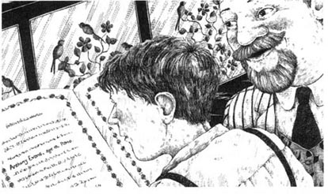
'Two weeks to go before the competition,' said Mr Gordon one evening. 'Look, this is the programme.'
The programme was big and beautiful and expensive. Tony looked for his name. He found it. 'Anthony Evans, aged 15. Piano.'
'Nobody calls me Anthony,' he said. 'Why can't they call me Tony?'
'Tony is a boy's name,' said Mr Gordon. 'Anthony is a man's name. Tony Evans was a farm boy. Anthony Evans is a musician. One day, Anthony Evans will be famous all over the world. And from today I'm going to call you Anthony.'
On the morning of the competition Mr and Mrs Wood and Anthony went into town in the car. While Mr Wood had a drink with some friends, Mrs Wood took Anthony shopping. She bought him a new brown suit and a new white shirt. Then she took him into a shoe shop — and Pip's father sold her some new shoes for Anthony.
They were beautiful shoes. They shone like glass and Mrs Wood liked them very much. The shoes were too small and they hurt Anthony's feet. But he did not say anything — what could he say?
Mrs Wood paid for the shoes, and Pip's father put them in a box.
'I hear you're playing in the music competition tonight,' he said to Anthony. 'I saw your name in the programme. Anthony Evans — it sounds wonderful. Good luck!'
In the evening the Wood family and Anthony drove to Mr Gordon's house. Mr Gordon came out. He was wearing his best suit.
'You look wonderful, Mr Gordon!' laughed Mrs Wood. 'Are you getting married?'
The old man got into the car and they all drove to the competition. The Woods went to their seats, but Mr Gordon took Anthony through the stage door. He took him to a room behind the stage. A lot of musicians were waiting there. The women were wearing long dresses. The men were wearing evening suits. Nobody spoke to Anthony.
'Goodbye, my boy,' said Mr Gordon, 'and good luck.'
Anthony sat in the waiting room for a long time. His feet hurt. They burned like fire. His hands felt cold. They were shaking. From a long way away he heard the sound of a piano. Every few minutes a man came in and called someone's name. After a long time the man came in and said, 'Mr Evans, please.' Anthony did not move. Nobody usually called him Mr Evans!
'Mr Anthony Evans, please!' said the man again. 'Come along — we haven't got all night!'
Anthony got up. 'Oh, my feet hurt!' he thought. He followed the man up some stairs. 'I'm walking like Charlie Chaplin,' he thought. 'Everybody will laugh at me.'
He walked on to the stage and sat down at the big piano. The dark wood shone like glass. He could see his face in it. He turned round and looked at the sea of faces. He could not see the Wood family. He could not see Mr Gordon. But suddenly Anthony felt their love and their kindness. His feet stopped hurting, his hands stopped shaking. He touched the piano. It was much bigger than the old piano in the classroom. The keys looked very clean and new. He wanted to touch them.
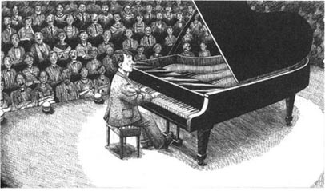
'Well,' he said to himself, 'of course I want to touch them. That's why I'm here!' And he began to play. He forgot about himself. He forgot about all the strange people in the theatre, and he just played for his friends. He played for Mr and Mrs Wood. He played for Linda. He played for Mr Gordon. And he played for old Mrs Lark.
'Where are you now, Mrs Lark?' he thought. 'Do you remember Tony Evans? You gave us a lot of happiness, Mrs Lark. Thank you. Thank you.' His hands flew over the piano keys. Beautiful sounds filled the theatre.
'He's going to win the competition,' Mr Gordon said to himself. 'And this is the happiest day of my life.'
And Anthony won the competition. He knew that he was the winner because he saw his photograph in the newspaper the next day. But he could not remember anything about it. All he remembered was his feet.
When he got out of the car, he could not walk. His new shoes hurt him too much. Mr Wood helped him into the kitchen while Mrs Wood filled an old tin bath with warm water. Linda took Anthony's shoes off. His feet were very hot and red. He put them in the warm water.
'This is wonderful,' he said.
'You've won!' shouted Mrs Wood. 'Forget about your feet, boy — you've won the competition! This is the most important night in your life!'
But Anthony was too tired to answer. They helped him up to bed, and he slept until nine o'clock the next morning.
Linda brought him breakfast in bed. He felt very strange and uncomfortable. 'I've never had breakfast in bed before,' he told her.
miss v. to fail to experience, see, or attend (an occurrence or event) 缺勤，缺课
programme n. a usu. printed list of a series of events, performers, etc. at a public function, etc. 节目单
expensive adj. costing much 昂贵的
luck n. chance regarded as the bringer of good or bad fortune 运气，命运
stage door the side or back door in a theatre, used by actors and theatre workers （供演员及工作人员使用的）剧院侧门或后门
音乐比赛
7．音乐比赛
托尼勤勤恳恳地干着活儿。他每天早晨6点起床，在农场里一直工作到下午4点。然而，日间的每一分钟，他的脑海里都充满着音乐之声。
他每天下午4点骑车到学校，上戈登先生的音乐课。他练琴一直练到7点，然后再骑车回农场吃晚餐。晚餐过后，他就阅读戈登先生给他的音乐书籍。他常常一直看到趴在厨房的桌子上睡着。
哪怕晚上睡觉的时候，他的脑子里面仍旧装满了音乐。小小的黑色音符在他眼前跳跃。等他醒来的时候，音乐也还在那儿缭绕不绝。托尼生活在一个音乐的世界里。
树木落叶了，冬天来了。托尼每天早晨起床时，天还没亮；他骑车去上钢琴课时，天已经黑了；他骑车回农场时也仍旧伴着夜色。有时候天会下雪，他便不得不走去走回。但是他从没有落过一次课。
“小家伙学得怎么样了？”一天，农场主问戈登先生。
“学得很好，”老师答道，“可是他学得太快了，我教不了他了。用不了多久，他就会需要一位真正的老师了。”
春天来了，树叶又发出了绿芽。
“6月12日，城里有一场音乐比赛。”一天晚上戈登先生说道。
“我能去听听吗？”托尼问道。
“不，”他的老师说道，“我去听，而你要去参加比赛。”
“可是我不行！我需要更多地练习，我还没有准备好！”托尼嚷道。
“你会作好准备的。”他的老师平静地说。
戈登先生是一位和蔼的老人，但他要求托尼每天练习四个小时。托尼准备比赛的时候，另有一个孩子帮着伍德先生干农活。
“距离比赛只有两个星期了，”一天晚上，戈登先生说道，“看看节目单吧。”
节目单很大，漂亮而且华贵。托尼寻找着自己的名字，它就在那儿。“安东尼·埃文斯，15岁。比赛项目：钢琴。”
“没有人叫我安东尼，”他诧异道，“他们为什么不能叫我托尼？”
“托尼是用来称呼孩子的，”戈登先生答道，“安东尼是大人的名字，过去的托尼·埃文斯是个乡下孩子，现在的安东尼·埃文斯是一位音乐家。有朝一日，安东尼·埃文斯将会举世闻名。从今天开始，我要叫你安东尼。”
比赛那天的早晨，伍德夫妇和安东尼一起坐着汽车进了城。伍德先生和一些朋友去喝酒，伍德太太则带着安东尼去买衣服。她给安东尼买了一件崭新的褐色外套和一件白色的新衬衫，然后她又带着安东尼进了一家鞋店——皮普的父亲帮她给安东尼挑了双新皮鞋。
皮鞋很漂亮，鞋面光可鉴人，伍德太太很喜欢。可是鞋太小了，把安东尼的脚挤得生疼。但他什么也没说——他能说什么呢？
伍德太太付了鞋钱，皮普的父亲把皮鞋放到盒子里。
“我听说你要参加今晚的音乐比赛，”他对安东尼说道，“我在节目单上看到了你的名字。安东尼·埃文斯一一听起来真帅。祝你好运！”
晚上，伍德一家和安东尼开车到了戈登先生的住处。戈登先生一身盛装地走出门来。
“你看起来可真精神，戈登先生！”伍德太太笑着说道，“是要当新郎官吗？”
老人坐进汽车，他们一起驱车去比赛的地方。伍德一家找到他们的座位，戈登先生则领着安东尼穿过剧院后门来到后台的一个房间。不少音乐家都等在那里，女士们身着长裙，男士们则穿着晚礼服。没有人搭理安东尼。
“再会，我的孩子，”戈登先生说道，“祝你好运。”
安东尼坐在房间里等了好久，他的脚生疼，感觉火辣辣的。他的手冷冰冰的，瑟瑟发抖。他听见从很远的地方有琴声传来。有个人每隔几分钟就进来报个名字。过了好久，这个人进来叫道：“埃文斯先生，请上场。”安东尼没有动。平常可从没有人叫他埃文斯先生！
“安东尼·埃文斯先生，请上场！”那人重复道，“快点，我们可等不了你一晚上！”
安东尼站起身来。“天哪，我的脚可真疼！”他心想。他跟着那人上了几级楼梯。“我走路的样子简直就像查理·卓别林，”他想，“所有人都会笑话我的。”
他走上舞台，坐在那架巨大的钢琴前。深色的木头亮得像镜面一样，能照出他的脸。他转过身来，看着台下的人山人海。他看不到伍德一家坐在哪儿，也找不着戈登先生。但他忽然间感觉到了他们的爱与心意。他的脚不疼了，手也不抖了。他碰了碰钢琴，这台钢琴比乡下教室里那台旧的可大多了，琴键看上去很干净，是崭新的。他很想去触摸那些琴键。
“是的，”他心想，“我当然想触摸它们，我就是为此而来的！”于是，他开始演奏，他完全忘记了自己的存在，忘记了剧院里的陌生人群，他只为自己的朋友们演奏。他为伍德先生和伍德太太演奏，为琳达演奏，为戈登先生演奏，也为年迈的拉克夫人演奏。
“这会儿您在哪儿呢，拉克夫人？”他心想，“您还记得那个叫托尼·埃文斯的孩子吗？您给我们带来了那么多的欢乐，拉克夫人，谢谢您，谢谢您。”他的双手在琴键上飞舞，美妙的乐声充满了整个剧院。
“他会赢得这场比赛的，”戈登先生对自己说道，“这是我一生中最高兴的一天。”
安东尼确实赢得了这场比赛。他是第二天在报纸上看到了自己的照片才知道自己赢了的。但他什么也不记得了，只记得自己的脚痛。
当他迈出车子的时候，他一步也走不动了，新鞋子实在太挤脚了。伍德先生扶着他走进厨房，伍德太太则用一只旧锡盆盛满热水。琳达帮安东尼把鞋子脱下来，他的脚红肿发烫。他把脚放到热水里。
“真舒服。”他说道。
“你赢了！”伍德太太嚷道，“孩子，忘掉你的脚痛吧，你赢了这场比赛啊！这是你一生当中最重要的一个晚上！”
但是安东尼已经疲倦得说不出话来。他们扶着他上了床，他一直睡到第二天早上9点。
琳达将早餐给他送到床上。他感觉怪怪的，很不自在。“我以前从来没有在床上吃过早餐。”他对她说。
8．The End of the Story
8
The End of the Story
Sir Anthony Evans turned to me. 'That competition was the start of wonderful things for me,' he said. 'I went to the College of Music for three years. Of course, I worked hard, but I enjoyed every minute. I always went back to the farm for my holidays. And one summer, when I was twenty, I asked Miss Linda Wood a very important question. "I can't give you much, Linda," I told her. "But one day I shall be rich and famous. Then I'll come back again, and I'll ask you to marry me." She gave me a long, loving look. Then she laughed. "Oh, Anthony," she said. "Don't wait until you're rich and famous. Ask me now!" So I did — and here we are!'
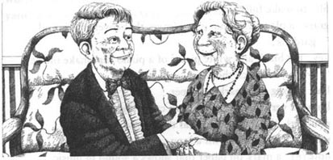
'We've been married for sixty years. Five years ago, the Queen invited us to Buckingham Palace. I was Mr Anthony Evans when I went into the Palace. I was Sir Anthony Evans when I came out... and,' — he took his wife's hand — 'my dear Linda was Lady Evans.'
There was a knock at the door of the dressing-room. 'Two minutes, Sir Anthony!' said a voice.
The famous musician stood up. 'I'm ready,' he said. He turned to me.
'How many concerts have I given? Two thousand? Three thousand? For me, every concert is new and exciting. Now go, my dear, and write your story. Tell the readers of your newspaper that I am a very lucky man.'
故事的结局
8．故事的结局
安东尼·埃文斯爵士朝我转过身来。“对我而言，那场比赛是所有美好的一切的开端，”他说道，“我去音乐学院上了三年学。当然我学得很刻苦，但是每一刻我都乐在其中。每逢假期，我总是回到农场。在我20岁的那个暑假里，我问了琳达·伍德小姐一个重要的问题。‘琳达，我现在给不了你太多，’我告诉她，‘但有朝一日我会功成名就的。那时，我会回到这里，请求你嫁给我。’她深情地、久久地看着我，然后笑了。‘哦，安东尼，’她说，‘不要等到你功成名就的时候，现在就好！’于是我就向她求婚了——就是这样！”
“我们结婚已经60年了。五年前，女王陛下邀请我们去白金汉宫。进去的时候我是‘安东尼·埃文斯先生’，出来的时候，我就成了‘安东尼·埃文斯爵士’……”他握住了妻子的手，“而我亲爱的妻子则成了‘埃文斯夫人’。”
化妆间外有人敲门。“还有两分钟，安东尼爵士！”有人说道。
这位著名的音乐家站起身来。“我准备好了。”他说着，朝我转过身来。
“你问我开过多少场音乐会？两千场？三千场？对于我来说，每一场音乐会都是全新的，都是令人激动的。现在去吧，我的孩子，写出你的稿子，告诉你的读者们，我是一个多么幸运的人。”
ACTIVITIES: Before Reading
ACTIVITIES
Before Reading
1．Read the story introduction on the first page of the book. How much do you know now about the story? Tick one box for each sentence.
1) The boy works for a farmer.
YES □／NO □
2) Everything in the old building is rubbish.
YES □／NO □
3) The boy has had piano lessons for many years.
YES □／NO □
4) The boy has never had lessons, but he can play the piano.
YES □／NO □
5) The boy is clever and does well at school.
YES □／NO □
6) Music changes the boy's life.
YES □／NO □
2．What is going to happen in the story? Can you guess? Tick one box for each sentence.
1) The farmer throws the piano away.
YES □／NO □
2) The farmer gives the piano to the boy.
YES □／NO □
3) The farmer sells the piano.
YES □／NO □
4) The boy keeps the piano and learns to play it.
YES □／NO □
5) The boy loses his job because of the piano.
YES □／NO □
6) The boy decides to be a music teacher.
YES □／NO □
7) The story has a happy ending.
YES □／NO □
ACTIVITIES: While Reading
ACTIVITIES
While Reading
1．Read Chapter 1 and answer these questions.
1) How did Sally Hill feel before she met Sir Anthony?
2) Who looked like a farmer's wife?
3) How old was Sir Anthony when he first touched a piano?
4) When did Sir Anthony leave school?
5) Where did he work after he left school?
6) What was Sir Anthony's school like?
2．Read Chapters 2 and 3. Are these sentences true (T) or false (F)? Change the false sentences into true ones.
1) Mr Grey didn't enjoy teaching children.
2) Tony was a slow, quiet boy.
3) Tuesday was reading day at Tony's school.
4) Tony often went to concerts.
5) There were six children in Tony's family.
6) Most children got jobs in offices when they left school.
7) Tony was interested in the flowers and trees in the country.
8) Mr Wood had a daughter who was older than Tony.
9) On the farm Tony worked hard and slept badly.
10) Pip, John and Tony all liked working on the farm.
3．Read Chapter 4. Who said these words, and to whom?
1) 'It isn't a cupboard. It's an old piano.'
2) 'We can't get rid of this. We really can't.'
3) 'I have piano lessons at school hut I can't play like you.'
4) 'It is rubbish, boy. Take it away.'
5) 'I don't want money. I want the piano.'
4．Before you read Chapter 5, can you guess the answer to this question?
Tony wants to keep the piano. Will he...
1) hide it on the farm?
2) ask Pip and John to keep it in their house?
3) find another place to keep it?
4) ask Mrs Lark to keep it for him?
5) ask Mrs Wood and Linda to help him?
5．Read Chapter 5. Choose the best question-word for these questions, and then answer them.
Who/Where/Why
1) ...did Tony go into the school?
2) ...was the school empty?
3) ...helped Tony to move the piano?
4) ...did Tony go every evening that summer?
5) ...taught Tony to read music?
6．Read Chapter 6, then circle the correct words in each sentence.
1) Mr Gordon went to the school to get a key/a book.
2) Mr Gordon smiled/cried when he heard the piano.
3) Tony's first music lessons were free/cheap.
4) Mr Gordon/Mr and Mrs Wood decided to pay for Tony to go to the College of Music.
5) Mr Wood thought that good musicians/farm boys were special people.
7．Read Chapters 7 and 8. Then put these sentences into the right order, to make a short paragraph.
1) Tony practised for the competition for four hours every day.
2) But he always went back to the farm for his holidays.
3) The new shoes hurt his feet, but Tony still played well.
4) For a year, Tony had lessons from Mr Gordon.
5) He married Linda when he was twenty.
6) He won the competition, and the next day his photograph was in the newspaper.
7) Mrs Wood bought him new clothes and shoes.
8) Now he is famous and has given thousands of concerts.
9) Then he went to the College of Music for three years.
10) One day Mr Gordon told him about a music competition in the town.
ACTIVITIES: After Reading
ACTIVITIES
After Reading
1．This is the beginning of Sally Hill's story about Sir Anthony Evans. Can you find and correct the fourteen mistakes in it?
Yesterday was Sir Anthony Evans' seventieth birthday concert. He played music for the guitar by Mozart, and millions of people came to listen to this very famous guitarist. After the concert, I went to see him and his sister, Lady Linda Evans, in the theatre dressing-room, and Sir Anthony told me his story.
He came second in a music competition when he was sixteen, but the story really began before that. One day in an old factory building a boy called Tony found a new piano. He was fourteen at the time. He came from a musical family and he knew a lot about music, and when he touched the keys of the piano...
2．Put these words into two lists. Then think of a name for each list and write them in the boxes.
animal, chicken, college, concert, country, cow, field, grass, keys, lorry, note, piano, play, practise, song, sound, yard
3．Sally Hill also talked to Lady Linda Evans about Sir Anthony. Put their conversation into the correct order and write in the speakers' names. Sally speaks first (No. 3).
1) ______ 'When he played the piano that first time, I knew that he was a real musician — much more than me. And I wanted to help him.'
2) ______ 'How did you feel when he won the competition?'
3) ______ 'What was Sir Anthony like when you first met him?'
4) ______ 'It was wonderful! I was so happy for him. He went away after that, of course — but he always came back.'
5) ______ 'Why did you want to teach him?'
6) ______ 'I didn't want to tell anybody. It was our secret. Tony liked learning about music — and I liked being with Tony.'
7) ______ 'He was a big, strong boy. He didn't say very much, but he was very nice.'
8) ______ 'Why didn't you tell your parents about the lessons?'
9) ______ 'Oh yes! He learnt very quickly, and he remembered everything.'
10) ______ 'So you taught him to read music. Was he a good student?'
4．Here is a new illustration for the story. Find the best place in the story to put the picture, and answer these questions.
The picture goes in Chapter ______.
1) Where are these people?
2) Who are they helping, and why?
3) What happened earlier that evening?
Now write a caption for the illustration.
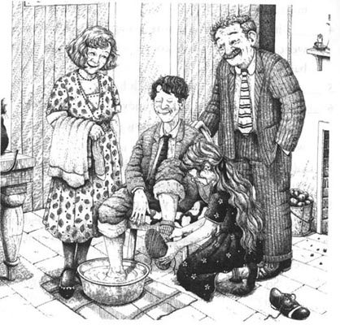
Caption: __________________________________
5．Write in the names which go best with these descriptions.
Mr and Mrs Wood/Mr Gordon/Mrs Lark/Linda Wood/Pip and John/Tony's mother
1) ______ helped Tony to move the piano.
2) ______ gave Tony time for his piano lessons, and paid for his lessons at the College of Music.
3) ______ gave Tony his first piano lessons free.
4) ______ got a job for him on Mr Wood's farm.
5) ______ taught Tony to read music.
6) ______ taught Tony to enjoy singing.
Whose help do you think was most important to Tony? Put the names of the characters in order, with the most important one first.
6．Do you agree (A) or disagree (D) with these sentences? Explain why.
1) If you have a special feeling for music (or football, or writing), you don't have to work hard or practise every day.
2) If you want to be really good at something, it must be the most important thing in your life.
3) Luck is more important than hard work if you want to do well.
4) If you want to do well, the most important thing is to belong to a rich family.
封底
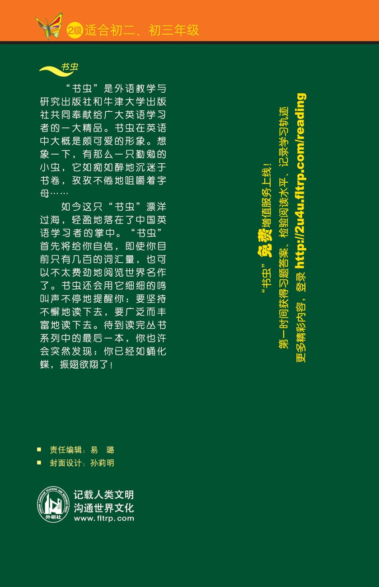